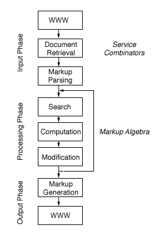
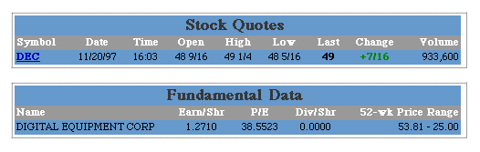
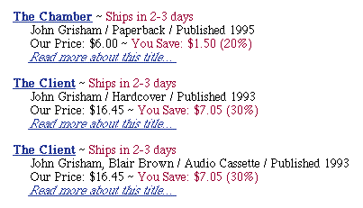

SRC Technical Note
1997-029
December 1, 1997
WebL – A Programming Language for the Web
Thomas Kistler¹ and Hannes Marais²
¹ Information and Computer Science Department,
University of California at Irvine
E-mail: kistler@ics.uci.edu
² DIGITAL Systems Research Center
E-mail: marais@pa.dec.com

Systems Research Center
130 Lytton Avenue
Palo Alto, CA 94301
http://www.research.digital.com/SRC/
© Copyright 1997 Digital Equipment Corporation. All rights reserved
Abstract
In this paper we introduce a programming language for Web
document processing called WebL. WebL is a high level, object-oriented
scripting language that incorporates two novel features: service combinators
and a markup algebra. Service combinators are language constructs that
provide reliable access to web services by mimicking a web surfer's behavior
when a failure occurs while retrieving a page. The markup algebra extracts
structured and unstructured values from pages for computation, and is based
on algebraic operations on sets of markup elements. WebL is used to quickly
build and experiment with custom web crawlers, meta-search engines, page
transducers, shopping robots, etc.
1. A Computation Model for the Web
The architectural, physical and administrative constraints of the Internet require new
models for computing over planet-wide structures such as the World-Wide-Web.
Some of the characteristics of the web, like its wide area distribution,
unreliable services, lack of referential integrity, security model,
and lack of data typing, differ immensely from those of traditional
programming models, which presupposes a non-distributed, well-structured,
and predictable infrastructure.
Furthermore, because of the web's geographical
distribution, latency and bandwidth – not CPU speed and memory size –
become the limiting factors that need to be addressed. So what
kind of programming models and programming constructs are needed to compute
on the web? To understand this question, we first have to study typical
web computations. In our view, a typical web computation can be divided into three
phases.
The input phase involves fetching one or more web pages
for processing. During this phase we have to contend with the web's geographic
distribution and architectural inefficiencies. For example, one or more
of the following situations might apply when retrieving a page from a web service:
- The page is available and can be retrieved successfully.
- The server is unavailable or provides intermittent
service due to a high load.
- The page is (perhaps temporarily) unavailable or was redirected to another server.
- The connection is unexpectedly terminated or the data transfer speed varies, stalling or dropping to an unacceptable rate.
- The page is mirrored geographically, perhaps on servers with different
capacity.
Consequently, a programming model for the web not only has to expect several modes
of failure (for which many programs are typically not designed) but should also
provide functionality to overcome these problems, for example, to exploit
the inherent paralellism of replicated
servers. Our approach is to use service
combinators to make access to services more reliable and to simplify
the handling of failures (see section 3).
The processing phase of a typical web computation involves
extracting data values from pages and performing computations on these
data values. We assume pages to be marked-up in either XML or HTML, so
as to exploit the structural content of the page. Our data extraction
technique is based on a markup algebra that performs operations on sets of
elements in a page (see section 4).
The output phase of a typical web computation covers the generation
of web documents from values computed during the processing phase, and
storing them back on the web (for example, by publishing the page on a web server).
Figure 1 depicts this general model of a web computation. Web pages
flow through a pipeline of service combinators for fetching pages,
a markup parser, the markup algebra for extracting (or "searching" for) data values from (on) a page,
computing on those values, and page manipulation. Searching, computing and manipulation is repeated as often as needed.
Finally the page is regenerated from its internal representation by the markup generator, and stored back on the web.

Figure 1.A Model for Computation on the Web
2. The Programming Language WebL
Our implementation of this computation model is called WebL.
WebL is a high level, dynamically typed, object oriented scripting language
that was specifically designed for performing web computations. It
incorporates two novel features: service combinators and a markup algebra. WebL also provides
functionality to generate new web pages or to modify existing ones, and
provides special modules to simplify web-related tasks. Besides the features
that are tailored towards manipulating HTML and XML, the language supports
modules, closures, exceptions, sets, lists, associative arrays, multithreading,
built-in load balancing, and channel-based synchronization. These features
make WebL a convenient language to prototype computations on the web and
an excellent tool for web masters. WebL's syntax
is a mix of C, C++, Modula-2 [Wir82], and Obliq [Car94].
Even though we incorporated many features
into the language, we believe WebL is still simple and easy to learn.
Some of the applications we constructed with WebL so far include:
- Customizable web crawlers
- Meta-search engines for popular search engines on the web
- Meta-newspapers that collect articles from several sites according to
your interests
- Tools to build a newspaper from CDF-based descriptions [CDF97]
- Shopping robots that shop for the cheapest books at several electronic
bookstores
- Tools to extract financial information from stock pages
- Tools to extract and compute project information from DIGITAL's intranet
- Tools to concatenate Latex2HTML-generated documents for printing
- Tools to validate links in web pages
The WebL prototype is implemented in pure Java. To complement writing WebL programs,
WebL functions are also directly accessible from within Java code. This assists programmers
that want to use the WebL functionality, but
don't want to learn yet another programming language. This mixed approach also
allowed us to easily extend WebL with support for existing Java APIs, for example libraries that
implement web-servers and libraries to access relational databases.
In the remainder of the paper we will concentrate on the two novel aspects
of WebL, namely service combinators (section 3) and the markup algebra
(section 4). These sections are followed with related work (section 5)
and conclusions (section 6). An appendix lists example programs.
3. Service Combinators
An experienced web surfer exploits a repertoire of behaviors when confronted
with the situations introduced in section 1 (e.g. server failure,
stalling or dropping service rates, etc.). We call these behaviors web
reflexes. For example, users may
- reload a page on a stalled link
- retry requests, taking short pauses in between requests
- terminate a request that takes too long
- switch to less used servers with the same information
- switch to alternate sources of information
- monitor the transfer rate and decide whether to wait for the page to
arrive
- run fetches in parallel, waiting for the first to finish, and stopping
the other requests
A strategy for making computations on the web more reliable is to use programming
constructs called service combinators [CD97]. The main purpose
of service combinators is to mimic these reflexes or, in a more general
way, to make any algorithmic behavior of web users scriptable. Therefore,
under the basic premise that by providing the programmer with easier ways to
express these reflexes and it becomes easier to write robust scripts, service
combinators provide explicit language constructs to automate handling of
time-out and failure, exploitation of replicated data, etc. As in the approach
suggested in [CD97], WebL maps service combinators directly onto operators
of the language. As will be noticed from the following examples, service
combinators are also convenient language constructs for handling exceptions.
For the remainder of this section S and T to denote operands
(called services), which may contain primitives to fetch pages or
general WebL computations.
Services
getpage(string, [. param1=val1, param2=val2, ... .],
[. header1=val1, header2=val2
.])
postpage(string, [. param1=val1, param2=val2, ... .],
[. header1=val1, header2=val2
.])
The getpage function fetches with the HTTP GET protocol the resource
associated with the string URL. The result returned is a page object that
encapsulates the resource. The function fails if the fetch fails. The second
and third arguments to getpage are optional – when specified, they provide
the server with query arguments and HTTP headers
respectively. A similar function called postpage uses the HTTP POST
protocol, used to fill in web-based input forms.
// This program simply attempts to fetch the named URL.
page := getpage("http://www.digital.com")
// This program looks up the word "java" on the
// AltaVista search engine.
page := getpage("http://www.altavista.digital.com/cgi-bin/query",
[. pg="q", what="web", q="java" .])
Sequential Execution
S ? T
The "?" combinator allows a secondary service to be consulted in the
case the primary service fails for some reason. Thus, the service S
? T acts like the service S except that if S fails then it executes
the service T.
// This program first attempts to connect to AltaVista
// in California, and in the case of failure, attempts to
// connect to a mirror in Australia
page := getpage("http://www.altavista.digital.com") ?
getpage("http://www.altavi
sta.yellowpages.com.au")
Concurrent Execution
S | T
The "|" combinator allows two services to be executed concurrently.
The service S | T starts both services S and T at the same time
and returns the result of whichever succeeds first. If both S and T fail,
then the combined service also fails.
// This program attempts to fetch a page from one of the two
// alternate sites. Both sites are attempted concurrently, and
the
// result is that from whichever site successfully completes first.
page := getpage("http://www.altavista.digital.com") |
getpage("http://www.altavista.yellowpages.com.au")
Time-out
timeout(t, S)
The time-out combinator allows a time limit to be placed on a service.
The service timeout(t, S) acts like S except that it fails after
t milliseconds if S has not completed within that time.
// This program attempts to connect to AltaVista, but
// gives a limit of 10 seconds to succeed.
page := timeout(10000, getpage("http://www.altavista ...") |
getpage("http://www.altavista... "))
Repetition
repeat(S)
The repeat combinator provides a way to repeatedly invoke a service
until it succeeds. The service repeat(S) acts like S, except that
if S fails then S starts again. The loop can be terminated by writing timeout(t,repeat(S)).
// This program makes a repeated attempts in the
// case of failure, alternating between two services.
page := repeat(getpage("http://www.altavista ...") ?
getpage("http://www.altavista ..."))
Non-termination
stall()
The stall combinator never completes or fails.
// This program repeatedly tries to fetch the URL, but
// waits 10 seconds between attempts.
page := repeat(getpage("http://www.digital.com") ? timeout(10000,
stall())
4. Structured Text Search on Web Pages
4.1 An Algebra for Text Search
One of the challenges in structured text search is to support a unified
model of different views of a document. In one view we are interested in
the linear text flow of the page (without tags), for example to locate
words and character patterns. In another view, we are interested in the
hierarchical organization of the document, for example to use markup as
"landmarks" for guiding data extraction. Other views, such as a publishers
view that divides the document into lines, paragraphs, and columns are
also imaginable. In addition, we observe that different views of the document
are not always properly nested, as are rows in tables, or words in titles.
Rather, different views might overlap. Sentences usually go across multiple
lines and images might span multiple columns. As a consequence, a unified
model has to allow searching on several views, mixing of query results
from different views, and handling of overlapping elements in the same
or different views.
WebL's data extraction language addresses these problems with the notion
of a markup algebra. The markup algebra is based upon the concepts
of pieces, piece-sets and algebraic operators
that are applied to piece-sets.
First, we define a piece as a contiguous text region in a document,
identified by the starting and the ending position of the region. For this
paper we can imagine positions as indices that indicate a character offset
in the page, which makes it easy to determine by numerical comparison the
relationship between two regions, such as whether two pieces overlap, are
contained in each other, or follow each other. The length of a piece
is defined as the difference between the starting and ending position.
(Our actual WebL implementation uses a more complicated data structure
for pieces that simplifies searching and page modification.) We further
define a piece-set as a collection of pieces. Pieces within piece-sets
may overlap, be nested, or may belong to different pages. However, unlike
mathematical sets that do not impose a particular ordering on their elements,
piece-sets are always in a canonical representation in which pieces are
ordered accordingly to their starting position, and then their ending position
in the document. This allows iterating over pieces in a set in the sequence
they appear in the document, and also to pick the n'th occurrence of a
pattern (by indexing into the piece-set). Both pieces and piece-sets are
mapped to special objects in WebL, which means that they can have attributes
and be manipulated by program.
A common way to create a piece-set is to search for all the HTML or
XML elements with a specific name (we call this a structured search).
For example, the following program returns all the anchors (hyperlinks)
that occur on the DIGITAL homepage by calling a method called Elem of
the page object P:
P := getpage("http://www.digital.com/");
links := P.Elem("A") // returns a piece-set of "A"
elements
After the method invocation, the variable links contains a piece-set
that, for every matching HTML or XML element, contains a piece that points
to the starting and ending position of the element. In addition, all the
element names and attributes are made visible to the programmer by associating
them with the appropriate piece object.
Another way to create a piece-set is to search for character patterns,
ignoring the markup (we call this unstructured search or pattern
search). The Pat method of a page object extracts all the occurrences
of a Perl 5-style regular expression [Fri97] in the text of a page. The
following example extracts the occurrences of the word "Digital" or "digital"
in the Digital home page.
P := getpage("http://www.digital.com/");
words := P.Pat("(D|d)igital")
If the regular expression contains Perl-5 groups, the matching groups are
accessible as attributes of the piece. Like the Elem method, the Pat method
computes a set that, for every match, contains a piece that points to the
starting and ending position of the match.
Finally, we define a set operator S ¤ T
as an algebraic operation ¤ between two
piece-sets S and T that returns a third piece-set as a result. For the
remainder of this section, S and T denote piece-sets, the
elements of S and T are referred to as s and t,
and P stands for a page object. WebL divides set operators into groups
of basic set manipulation operators, positional set operators, and
hierarchical set operators, which
will be discussed in the following sections. In the interest of conciseness,
we will not describe the negated operators (those starting with an exclamation
point), as their behavior is easy to deduce.
4.2 Basic set operators
| Union |
S + T |
| Intersection |
S * T |
| Exclusion |
S - T |
Basic set operators are used for basic set manipulation. They contain
a set union operator, a set intersection operator, and a set exclusion
operator. The set union operator merges the two sets S and T and eliminates
duplicate pieces. The set intersection operator returns the set of all
pieces that are contained both in S and T, and the set exclusion operator
calculates the set of pieces that are contained in S but not in T. As an
example, the following program retrieves all the level one and level two
headings in a page:
titles := P.Elem("H1") + P.Elem("H2")
4.3 Positional operators
| S before T |
S !before T |
| S after T |
S !after T |
| S directlybefore T |
S !directlybefore T |
| S directlyafter T |
S !directlyafter T |
| S overlap T |
S !overlap T |
Positional operators provide functionality to query on the locality
property of pieces, such as searching for pieces that are located above
or below other pieces in the linear text flow of the document.
The before operator computes the set of pieces in S that are
located before some piece in T. We define a piece s to be located before
a piece t, if the ending position of s precedes the starting position of
t. Correspondingly, the after operator returns the set of the
pieces in S that are located after some piece in T. Although being very
effective, these two operators are not always sufficient. As an example,
in some cases we might not be interested in all the occurrences of a link
after a special keyword, but only in the very first occurrence of a link
after the special keyword. In this case, we use the stronger operators
directlybefore and directlyafter that return the set
of only the closest pieces in S that follow or precede some piece in T. We
also call the latter non-transitive versions of the before and
after operator. The following example depicts the differences
between these operators:
...
<IMG SRC="napa.gif">
<I>Fig 1. Sonoma and Napa</I>
// I1
...
<IMG SRC="tahoe.gif">
<I>Fig 2. Lake Tahoe</I>
// I2
...
<I>Northern California</I>
// I3
...
<IMG SRC="mendocino.gif">
<I>Fig 3. Mendocino</I> // I4
...
In order to retrieve the title of the first image we write the following
program, assuming that the first text stretch in italics in our excerpt
is also the first text stretch in italics in the whole document:
// retrieve the first italic text stretch -> {I1}
title := P.Elem("I")[0]
Searching for all the words in italics that follow an image yields the
result set containing pieces I1, I2, I3, and I4.
// retrieve all the titles that follow an image -> {I1, I2, I3,
I4}
titles := P.Elem(I") after P.Elem("IMG")
To retrieve all the titles of the figures we use the directlyafter
operator that does not return the word "Northern California", since it
does not directly follow an image.
// retrieve all the titles of the figures -> {I1, I2, I4}
titles := P.Elem("I") directlyafter P.Elem("IMG")
Finally, the overlap operator returns all the pieces in S that
overlap with some piece in T.
4.4 Hierarchical operators
| S in T |
S !in T |
| S contain T |
S !contain T |
| S directlyin T |
S !directlyin T |
| S directlycontain T |
S !directlycontain T |
In contrast to positional operators that provide functionality to express
locality relationships between pieces, hierarchical operators provide functionality
to express containment and inclusion relationships between piece.
The in operator returns the set of pieces in S that are contained
in some piece in T. We define a piece s to be contained in a piece t, if
the starting position of s follows or is equivalent to the starting position
of t, and the length of s is smaller or equal than the length of t. Equivalently,
the contain operator returns the set of pieces in S that contain
some piece in T. As an example, to search for all the rows in the third
table of a page, we write,
rows := P.Elem("TR") in P.Elem("TABLE")[2]
and to search for all the level two headings that mention the word UCI
we write
titles := P.Elem("H2") contain P.Pat("UCI")
As well as for positional operators, we define two stronger, non-transitive
operators directlyin and directlycontain that address
direct containment and direct inclusion properties. They return the set
of only the first pieces in S that contain or are contained in some piece
in T. The following example depicts the differences:
...
<UL>
<LI>First Section</LI>
// LI1
<LI>Second Section</LI>
// LI2
<LI>Third Section</LI>
// LI3
<UL>
<LI>First Subsection</LI>
// LI4
<LI>Second Subsection</LI>
// LI5
</UL>
</LI>
<LI>Fourth Section</LI>
// LI6
</UL>
...
To retrieve all the list items in this unnumbered list, we write the following
program, assuming that there is no other unnumbered list preceding this
section in the document:
// retrieves all the subsections -> {LI1, LI2,
LI3, LI4, LI5, LI6}
subsections := P.Elem("LI") in P.Elem("UL")[0]
However, in many cases we are not interested in nested lists and would
only like to retrieve the list items of the top-level list. Therefore we
use the directlyin operator and write:
// retrieve only the toplevel subsections ->
{LI1, LI2, LI3, LI6}
subsections := P.Elem("LI") directlyin P.Elem("UL")[0]
5. Related Work
Service combinators have first been presented by Cardelli and Davies in
[CD97]. Their semantics for service combinators differs slightly from the
WebL semantics in that their combinators include an extra combinator
limit(t, r, S) that acts like the service S, except that each connection
is considered to have failed if the rate ever drops below r Kbytes/sec
after the first t seconds of the connection. They can formally model the
status of a service at a particular time either by the current transfer
rate, the done status, or the fail status. The consequence of including the
transfer rate is that their service combinators can only operate on web services,
and not general computations. Ideally, we would like to make the service
combinators more orthogonal, so that a service and a computation on that
service can be expressed as a service itself. For example, a failure might
occur when a page was fetched successfully but the content of the page
is invalid or unexpected (as determined by a script that checks the page).
We obtain this orthogonality by removing the limit combinator, which
is not applicable to general computations (as they do not have a "rate").
Without the limit combinator, a computation's status is either running,
completed, or failed, and we can we map failure to
a programming exception. We can reintroduce the rate limit feature as part
of the getpage and postpage primitives themselves (for example
as separate arguments), which fail appropriately when the rate requirement
is not met.
In practice, the most widely employed technique for searching in text
documents is pattern matching using regular expressions [Fri97,
IEEE92]. Regarding structured text search, the limitations of regular expressions
are twofold: they completely lack information about the structure of the
document and they apply a "leftmost longest match" rule which is often inappropriate
for nested data structures. Searching for a table, for example,
only returns a correct match if there is only one table in the document.
A discussion of this problem is found in [CC97].
Several improved approaches to extracting information from semi-structured
text documents have recently been proposed. The most prominent techniques
are based on tree matching, grammar parsing, and set algebras.
In tree matching, the search problem is reduced to searching
a subtree (i.e. pattern) in a parse-tree (i.e. view). The main disadvantage
of tree matching is the lack of orthogonality and compositionality regarding
different views (i.e. different parse trees). Queries that search for character
patterns cannot be mixed with searches for special structures in the document.
In addition, many of the tree matching problems cannot be solved in linear
time, but have polynomial runtime. Some problems (such as unordered path inclusion)
are even NP-complete [Kil92]. Several recent programming and searching
languages are based on tree matching, among them the programming language
Turquois [MM97].
Context free grammars pursue an approach, in which the search
pattern is specified as a context free grammar [ST96]. The result of a
search query are all the substrings in the document that are accepted by
the specified grammar. On the one hand, context free grammars are very
expressive in that they allow the definition of recursive search queries.
On the other hand, they suffer from the same problems as tree matching:
they do not allow expressing view-spanning and overlapping queries and
require polynomial runtime.
Lately, several new techniques have been published that are based on
a set algebra [ST92, JK95, CCB94]. The Standard
Document Query Language (SDQL) of the Document Style Semantics and
Specification Language or DSSSL [DSSSL96] introduces the concept of
nodes and node-lists, which are loosely related to our pieces and piece-lists.
Some of the WebL operators are provided and the user can also program new
ones in a Lisp-like language. The data structure SDQL operates on – called
a grove – is essentially a tree of nodes corresponding to elements
in the document, and thus multiple views and overlapping elements cannot
be modelled. PAT expressions [ST92] use a set-at-a-time algebra
for manipulating sets of match-points and sets of regions. In contrast
to the WebL search algebra, PAT expressions do not support an orthogonal
and unified model. Sets of match-points and sets of regions cannot be arbitrarily
composed and, in regard to document transformation, match points are not
very practical since only the starting position of a match is recorded.
However, most of these problems can be avoided. Clarke, Cormack, and Burkowski
propose a compositional structured text algebra that is based on
the notion of sets and ranges [CCB94]. Apart from the WebL set-algebra,
this is the only other approach that supports overlappings between views.
Unfortunately, the idea has not completely been taken to the end. Although
the model supports overlappings the language does not (remember that WebL
has an explicit overlap operator). Additionally, nestings are avoided by
selecting the minimal segments from those set elements that nest. Concerning
runtime complexity, all of the set algebra problems can be solved in linear
time if no two elements in a set overlap [NY96]. In the worst case, if
all the elements in the set overlap with each other, the runtime complexity
is quadratic in the number of elements in the set. Considering the unlikelyness
of such an event and the importance of overlappings, this is a price that
we are willing to pay in WebL.
In contrast to the above high-level search languages, their are also efforts
to specify low-level programming API's that provides users with
the functionality for document navigation and manipulation, such as navigating
through the document parse tree, or modifying HTML and XML elements. The
most prominent activity in this area is W3C's document object model [DOM97].
In contrast to WebL, DOM is restricted to manipulating and searching single
HTML and XML elements, it does not provide a notion of character patterns,
does not support multiple overlapping views, and inherently cannot perform
computation.
There are also several recent proposals for automating tasks on the
web. The Web Interface Definition Language or WIDL [MA97] enables automation
by mapping web content into program variables using declarative descriptions
of resources. WIDL provides features to submit queries and to extract features
from the resulting pages. WIDL does not determine itself how search is
to be done, but rather uses the Java Page Object Model [JS] or the Document
Object Model [DOM97]. Page manipulation is not supported. WebSQL [AMM97]
is a declarative query language for extracting information from the web.
The language emphasis is on extracting connectivity information from pages
(for example to locate pages that are two hops away from a specific page).
WebSQL regards HTML documents as monolithic objects, and therefore its
analyses are limited to simple text matching techniques. The Internet Fish
Construction Kit (IFISH) is a tool to build dynamic information gatherers
on the web [LaM97]. Internet Fish use "info-chunks", possibly extracted
from web pages, or created by other independent fish, to place new info-chunks
on a shared black-board. The basic idea is that many fishes specialized
for specific tasks (for example looking for telephone numbers in a page)
make it easier to extract information from web pages that continually
change. IFISH is mainly concerned with the fish control structure and not
so much with the page fetching and data extracting steps.
6. Conclusions and Future Work
In this paper, we presented a novel programming language WebL for document
processing on the World-Wide-Web. WebL features two distinguishing features,
namely service combinators and a markup algebra. Service combinators allow
the construction of reliable services and the markup algebra supports the
extraction of data values from web pages. The language provides features
to perform computations on data values, and generate or manipulate web
pages appropriately. The resulting tool is well-suited for automating tasks
on the web and building and experimenting with web computations. We currently
plan to experiment with WebL for a while, to build larger applications
with it, and to extend it with additional libraries in the general domain
of information retrieval. One of the extensions we are currently investigating
is to generate WebL scripts automatically by demonstration. Another interesting
topic of investigation is how service combinators and the markup algebra
can be incorporated into the W3C's Document Object Model [DOM97].
References
| [AMM97] |
Gustavo O. Arocena, Alberto O. Mendelzohn, and George A. Mihaila. Applications
of a Web Query Language. Proceedings of WWW6, 1997, Santa Clara, California.
http://atlanta.cs.nchu.ed
u.tw/www/PAPER267.html |
| [Car94] |
Luca Cardelli. Obliq: A language with distributed scope. Research
Report 122, Digital Equipment Corporation Systems Research Center, Palo
Alto, California. June 1994.
ftp://gatekeeper.dec.com/pub/DEC/SRC/research-reports/abstracts/src-rr-12
2.html |
| [CC97] |
C. L. A. Clarke and G. B. Cormack. On the Use of Regular Expressions
for Searching Text. ACM Transactions on Programming Languages and Systems,
19(3), pp 413-426. March 1997. |
| [CCB94] |
C. L. A. Clarke, G. V. Cormack, and F. J. Burkowski. An Algebra
for Structured Text Search and a Framework for its Implementation.
Department of Computer Science, University of Waterloo, Canada, Technical
Report CS-94-30. August 1994. |
| [CD97] |
Luca Cardelli and Rowan Davies. Service combinators for Web Computing.
Research Report 148, Digital Equipment Corporation Systems Research Center,
Palo Alto, California. June 1997.
ftp://gatekeeper.dec.com/pub/DEC/SRC/research-reports/abstracts/src-rr-14
8.html |
| [CDF97] |
Channel Definition Format (CDF). Published by Microsoft Corp. September,
1997.
http://www.microsoft.com/stand
ards/cdf.htm |
| [DOM97] |
W3C DOM working group. Document Object Model Specification.
October 1997.
http://www.w3.org/TR/WD-DOM/ |
| [DSSL96] |
Document Style Semantics and Specification Language (DSSSL),
ISO/IEC 10179:1996.
http://www.jclark.com/dsssl/ |
| [Fri97] |
Jeffrey E. F. Friedl. Mastering Regular Expressions: Powerful Techniques
for Perl and Other Tools (Nutshell Handbook). O'Reilly and Associates,
1997 |
| [IEEE92] |
IEEE 1992. Standard for information technology - Portable Operating
System Interface (POSIX) - Part 2(Shell and utilities) - Section 2.8 (Regular
expression notation). IEEE Std 1003.2, Institute of Electrical and
Electronics Engineers, New York 1992. |
| [JK95] |
J. Jaakkola and P. Kilpelainen. SGREP. University of Helsinki,
Department of Computer Science, 1995.
http://www.cs.helsinki.fi/
~jjaakkol/sgrep.html |
| [JS] |
Netscape Corp. JavaScript Guide.
http://developer.netscape.com/library/documentation/communicator/jsgu
ide4/index.htm |
| [Kil92] |
P. Kilpelainen. Tree Matching Problems with Applications to Structured
Text Databases. Ph. D. Dissertation, Department of Computer Science,
University of Helsinki, Report A-19992-6, Helsinki, Finland. November 1992. |
| [LaM97] |
Brian A. LaMacchia. The Internet Fish Construction Kit. Proceedings
of WWW6, 1997, Santa Clara, California.
http://atlanta.cs.nchu.ed
u.tw/www/PAPER138.html |
| [MA97] |
Phillip Merrick, Charles Allen. Web Interface Definition Language
(WIDL). Published by webMethods Inc. September 1997.
http://www.w3.org/TR/NOTE-widl |
| [MM97] |
R. C. Miller and B. A. Myers. Creating Dynamic World Wide Web Pages
By Demonstration. Carnegie Mellon University School of Computer Science
Tech Report CMU-CS-97-131. May 1997. |
| [NY96] |
G. Navarro and R. Baeza-Yates. A Class of Linear Algorithms to Process
Sets of Segments. In Proceedings of PANEL'96, Volume 2, pp. 671-682,
1996 |
| [ST92] |
A. Salminen and F. W. Tompa. PAT expressions: an algebra for text
search. Acta Linguistica Hungarica, Vol. 41 (1-4), pp. 277-306, 1992-93. |
| [ST96] |
A. Salminen and F. W. Tompa. Grammars++ for Modelling Information
in Text. Department of Computer Science, University of Waterloo, Canada,
Technical Report, CS-96-40. November 1996. |
| [Wir82] |
Niklaus Wirth. Programming in Modula-2 (Texts and Monographs
in Computer Science). Springer Verlag, 1982. |
Appendix
Although we can't give a full description of WebL in this paper, we can
give a flavor of the language itself. Listing 1 implements a simple
function to retrieve a stock quotation from a service. Listing 2
implements a more complicated function to search for books by title
or author at the electronic book store Amazon.com. It fills in the
query form, analyses the results, and returns a list of book objects for
each book found.

stockQuote := fun(symbol)
page := getpage("http://fast.quote.com/fq/quotecom/quote", [. symbols=symbol .]);
(page.Elem("B") in (page.Elem("TABLE") contain page.Pat("Stock Quotes"))[0])[1].Text()
end;
s := stockQuote("DEC")
Listing 1. Retrieving a stock price from Quote.com

shopAmazon := fun(title, authorfirst, authorlast)
books := [];
params := [. .];
params["author"] := authorfirst + " " + authorlast;
params["author-mode"] := "full";
params["title"] := title;
params["title-mode"] := "word";
params["subject"] := "";
params["subject-mode"] := "word";
page := postpage("http://www.amazon.com/exec/obidos/ats-query/", params);
items := page.Elem("dd");
every book in items do
info1 := substring(book.Text(), `\w*([^/]*) (/ ([^/]*))?(/ [^\d]*(\d*))?`)[0];
info2 := substring(book.Text(), `Our Price: \$(\d*.\d*)`);
if (size(info2) > 0) and (info1[3] != "Audio Cassette") then
books = books + [[.
title = (page.Elem("a") directlybefore book)[0].Text(),
link = (page.Elem("a") directlybefore book)[0].href,
author = info1[1],
type = info1[3],
year = (select(info1[5],-2,-1) ? "N/A"),
price = info2[0][1]
.]]
end
end;
books
end
Listing 2. A WebL function to shop for books